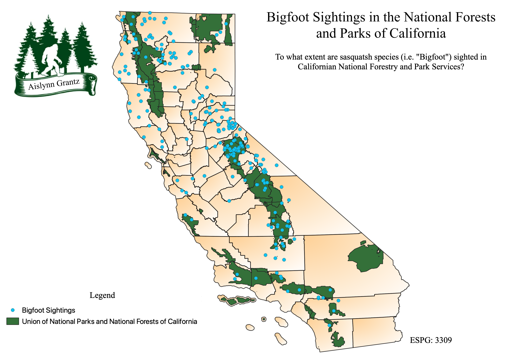

Map of Sasquatch Sightings in California Juxtaposed to National Forests and Parks in 2022
This map is of all documented sasquatch (a.k.a. “Bigfoot”) sightings in California up to February 2022. The driving question of my investigation was: “To what extent are sasquatch species sighted in National Forests and Parks?” and my aim was to dictate if there was a correlation between urbanization and the presence of sasquatch. In this project I used the Intersection Geoprocessing tool for all vector layers (e.g. Bigfoot Sightings, National Forest Land, National Park Land) with the counties of California to narrow the scope of my investigation. Furthermore, I used the Union Geoprocessing tool to join the National Forests layer with the National Park Layer to be able to analyze if sasquatch prefer urban or wild areas. Based upon the map, there appears to be slightly positive correlation with wild areas and sasquatch sightings, however, to further this research the entire U.S. should be mapped to increase validity of this conclusion.

Data used for this project is from:
National Park Service
ArcGIS Hub
Vector Files
Base Layer: California Counties
Intersection: Sasquatch Sightings in California
Union: National Forests and National Parks of California